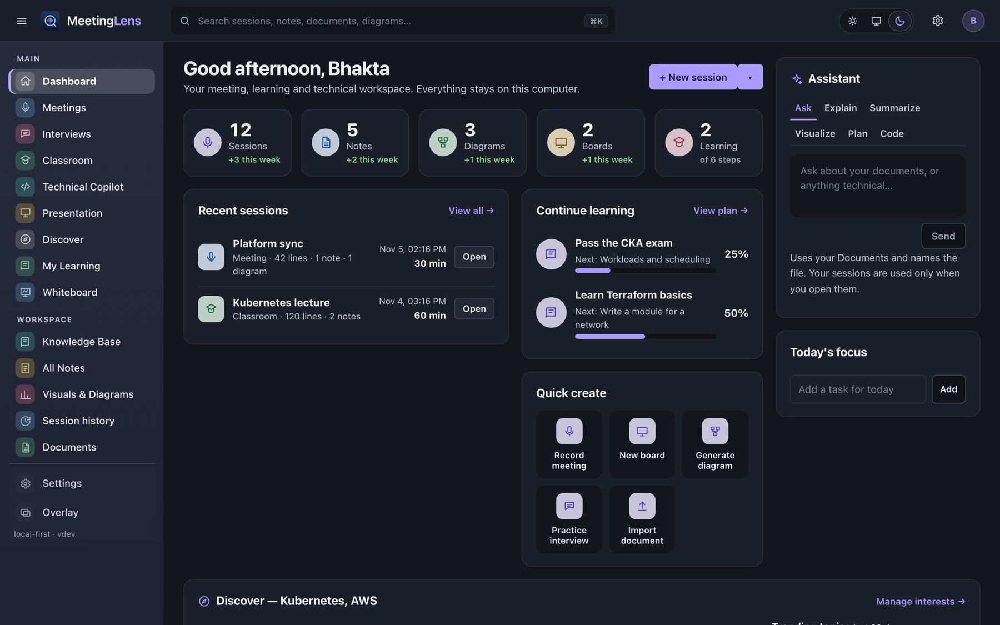
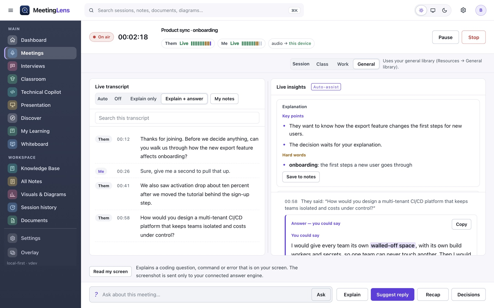
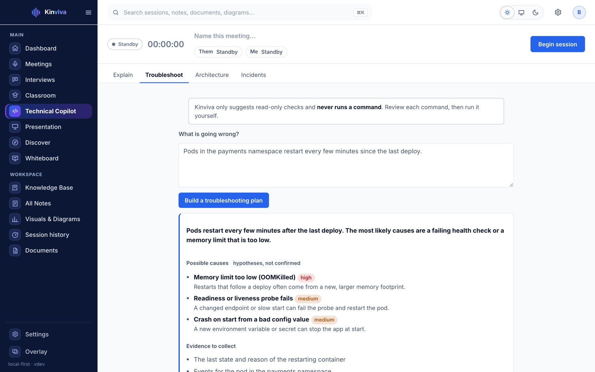
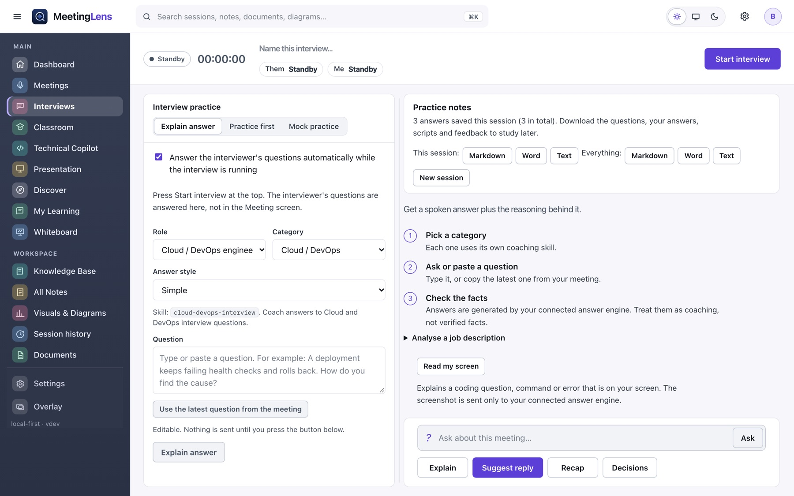

What was decided?
Decisions and action items come with the quote that proves them, and an owner only when someone said one.
Privacy-first AI copilot
Kinviva listens to your meetings, technical discussions, interviews and lectures on your own computer, explains what was said in plain words, and turns it into notes, diagrams and answers you can trust.
The free Community Edition is available now: download for Mac and Windows, version 0.1.5. Source on GitHub.
“Can we roll this back, or is the migration already applied?”
In plain wordsThey are asking whether the database change can still be undone.
“Let me check whether it has run, then I will answer.”
Suggested replyShown to you only. Nothing is typed into the call.

The problem
Kinviva is built for the moments when you need to keep up, remember, and answer well.
Decisions and action items come with the quote that proves them, and an owner only when someone said one.
Hard terms are explained in simple words. Troubleshooting plans are read-only and marked as hypotheses.
In an interview or a class, get an answer in the style you choose, without inventing your experience.
Sessions, notes and boards stay on your computer. No account and no telemetry.
Product
Screenshots use sample data. Each part works with the others.
Meetings
A live transcript beside plain-English insights. Hard words are explained, and you can ask, get a suggested reply, or request a recap.

Technical Copilot
New in 0.1.5Describe a problem and get a plan: possible causes as hypotheses, the evidence to collect, and read-only commands you copy and run yourself.

Classroom
New in 0.1.5Lost in a lecture? Get what the teacher is on right now in simple words. Then turn the class into notes, study guides and practice quizzes.

Interview
Each question the interviewer asks appears in a banner beside your answer. Choose your role and answer style, practise first, or run a mock interview.

Presentations
New in 0.1.5Type what the talk is about, choose audience, tone and length, and Kinviva plans the slides and saves a PowerPoint file you can edit. Then get speaker notes, rehearsal feedback and answers to audience questions.

Honest by design
Kinviva never presents a guess as a fact. When it draws your architecture, each box and line carries one of three labels, decided by code, not by the model.
A document you selected mentions it.
Someone in the conversation said it, in those words.
Kinviva suggests it. Drawn dashed, never called a fact.
How it works
Press Start. Kinviva listens to the call and your microphone and writes the transcript on your computer.
Each finished thought is explained in plain words. Ask a question, get a reply to say, or request a recap.
Save notes, draw a diagram, make a quiz. It is all searchable.
Privacy
Use local speech and a local model and nothing leaves your computer. If you choose a cloud service, the app tells you exactly what is sent.
Recordings are off unless you turn them on.
Never in files, logs or exports.
Nothing is collected about you.
Text is shown to you only. Nothing is typed into your call.
Questions
Yes. There is no account, no subscription and no paid tier. You only pay for any cloud AI service you choose to connect, such as Gemini. You can also use a local model for free.
The current installer is 0.1.5. It includes everything shown on this site: Meetings, Interviews, Technical Copilot, Classroom, Presentation, Whiteboard, Visuals, Notes and Discover.
Not unless you turn on "Save audio recordings" in Settings. By default it saves text, not audio.
Answers are suggestions from the AI service you connect and can be wrong. Kinviva labels what it knows and what it guesses, and never invents your own experience, but you decide what to say or do.
Macs with Apple silicon (macOS 13 or later). A Windows installer is available as an experiment.
Editions
The Community Edition is the whole app you can download now. Pro and Business are planned and are not available yet.
Local transcription, bring your own answer engine, explanations and history, interview and classroom help, technical troubleshooting and diagrams, Notes, Whiteboard. Free, no account.
About Community →Advanced technical investigations, richer diagrams and reports, enhanced interview and learning workflows, an optional managed AI service. Not built yet.
Join Early Access →Organization accounts, central administration, shared workflows, usage management and security policies. Not built yet.
Join Early Access →We're preparing the next chapter of Kinviva. Explore the product today and return when registrations open.